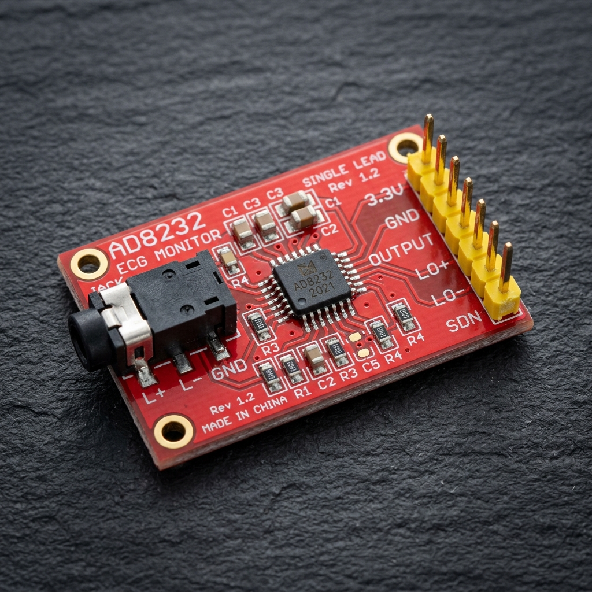
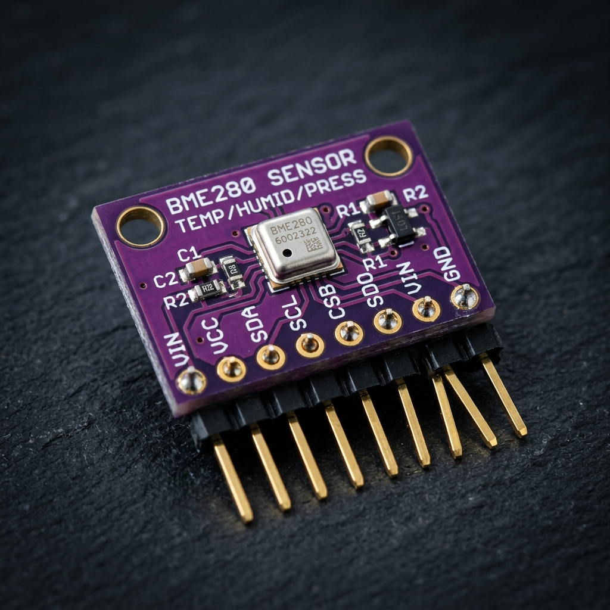
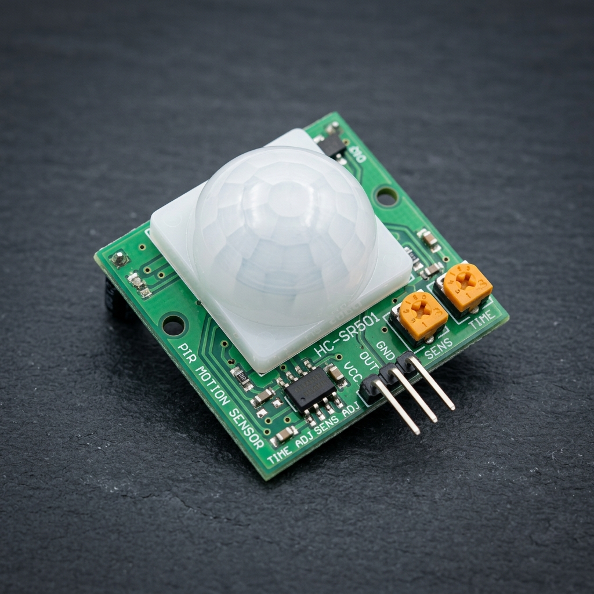
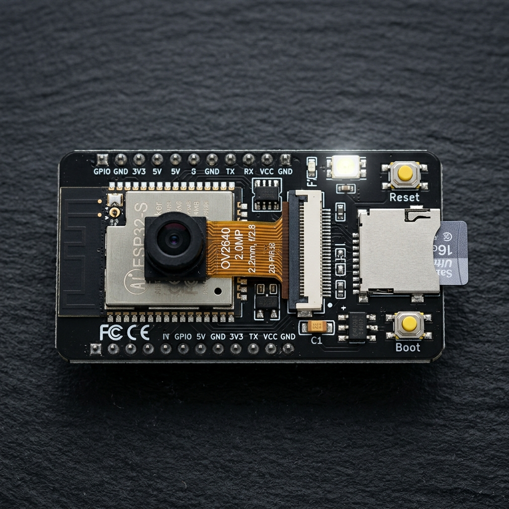
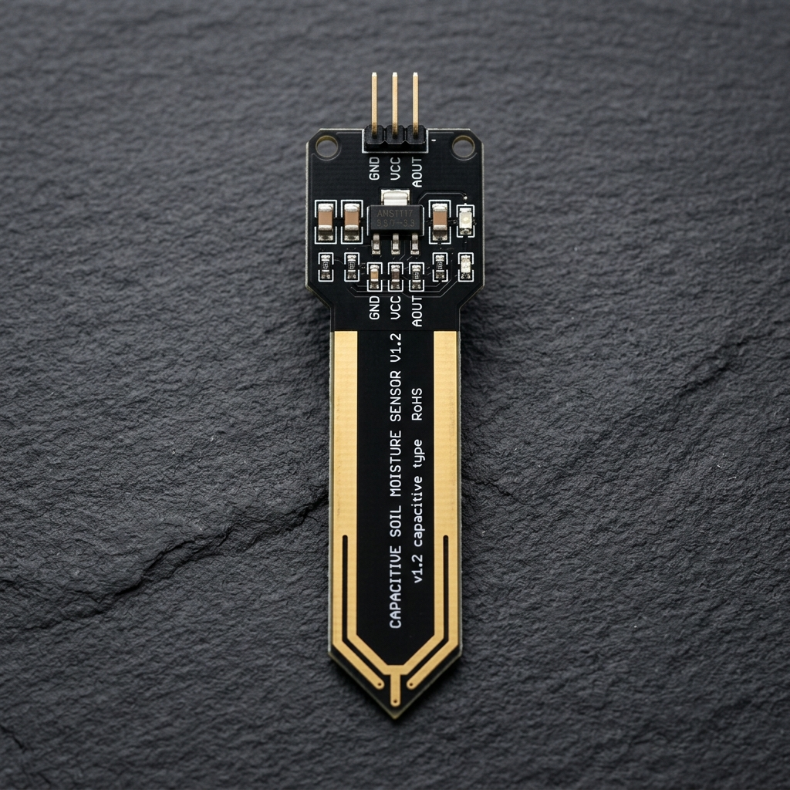
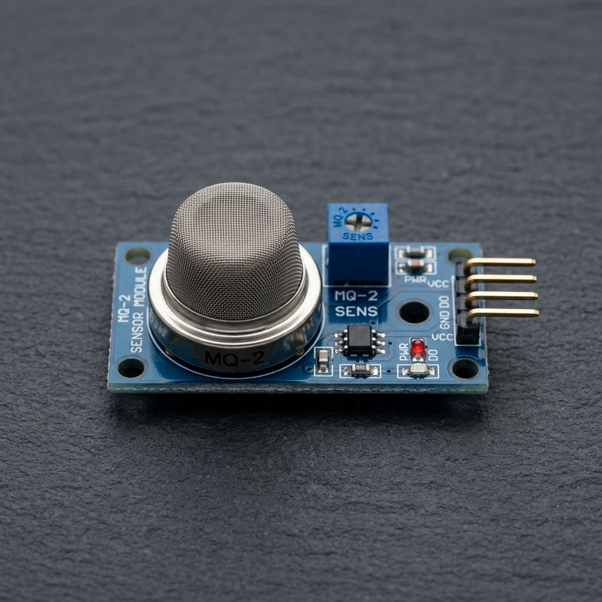
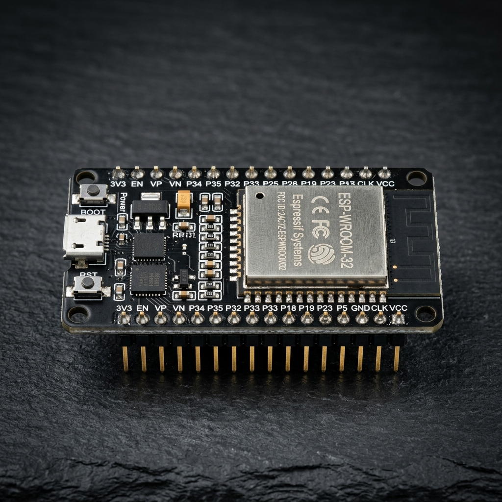
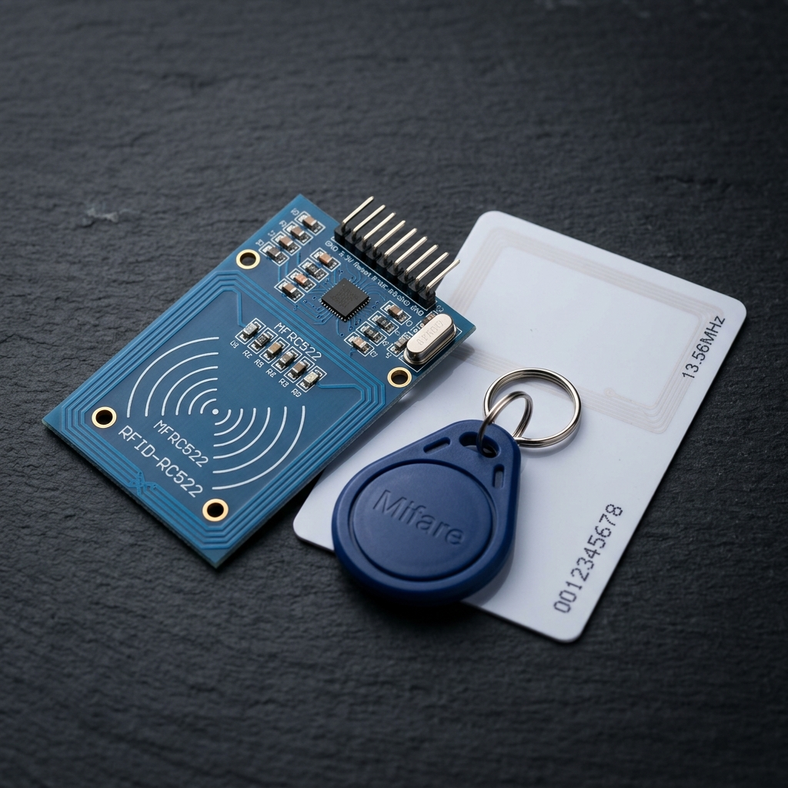
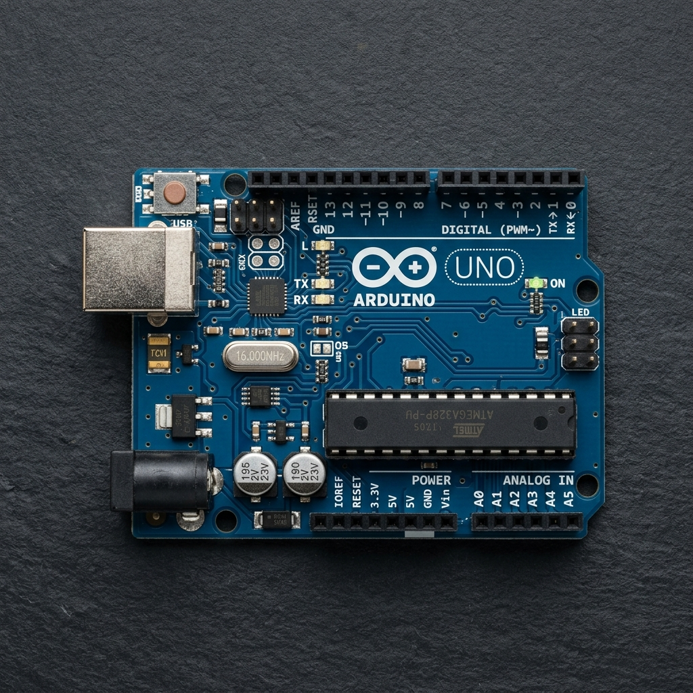
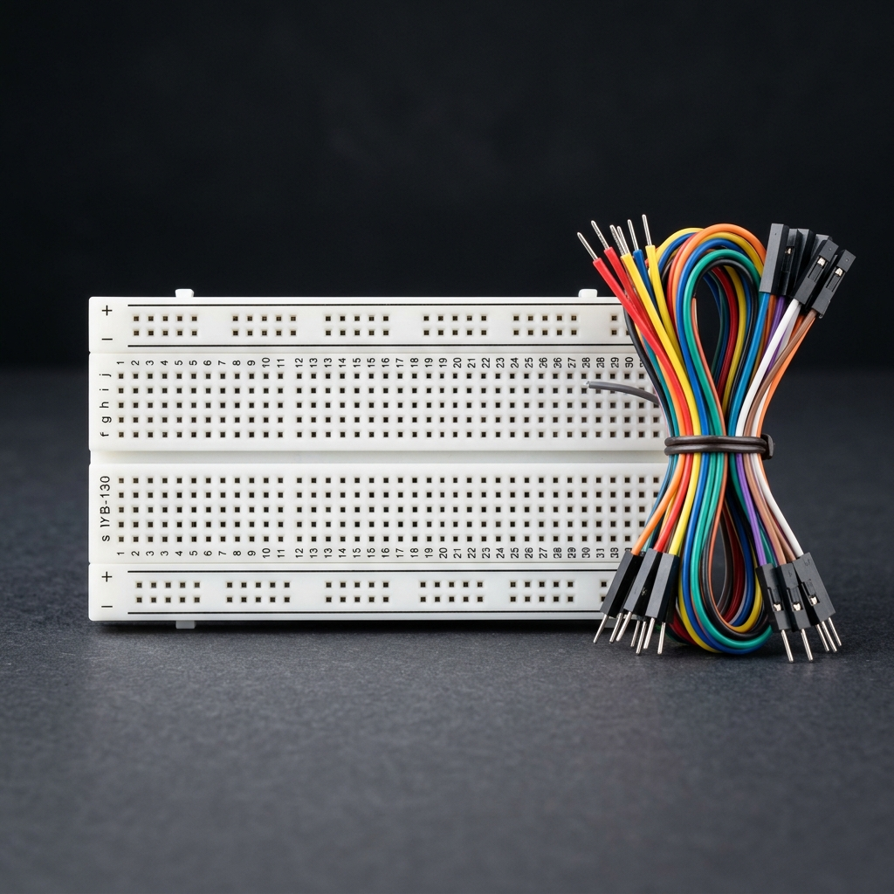

استكشف وتعلّم بناء 20 نظاماً متكاملاً متقدماً من أنظمة إنترنت الأشياء (IoT) خطوة بخطوة
منصة تفاعلية موحدة تجمع بين المحاكاة الحية في الوقت الفعلي، وتوزيع الأقطاب، وحساب الإشارات الرقمية، وقوائم المكونات المصورة بالصور الحقيقية، ومستودعات الأكواد الجاهزة للتحميل والنسخ. انقر على أي مربع أدناه للدخول إلى لوحة التحكم والمحاكي الخاص بذلك النظام.

1. جهاز تخطيط القلب وتطبيب القلب السريري (ECG Telemedicine Monitor)
التقاط النشاط الكهربائي للقلب ومعالجة موجات QRS ونبضات BPM وعزل التشويش وتنبيه اللانظميات.

2. محطة الأرصاد الجوية والمناخ الزراعي (Smart Weather Station)
قياس دقيق للحرارة والرطوبة والضغط الجوي وتقدير نقطة الندى وتوقع التقلبات الجوية.

3. نظام كشف الحركة والرادار المزدوج (PIR & Radar Intrusion Alarm)
دمج حساس الأشعة تحت الحمراء مع رادار الميكروويف RCWL-0516 لمنع الإنذارات الكاذبة وإرسال تنبيهات Telegram.

4. كاميرا المراقبة والذكاء الاصطناعي (ESP32-CAM AI Surveillance)
بث فيديو حي عبر شبكة Wi-Fi، كشف الحركة البصري، تخزين اللقطات على بطاقة MicroSD، وإرسال الصور عبر الويب.
5. منظم التكييف الذكي والتحكم بالأشعة تحت الحمراء (Smart AC Thermostat)
ضبط حرارة الغرف تلقائياً وإرسال أكواد IR لأجهزة التكييف وخوارزمية التخلفية لتوفير 30% من الطاقة.

6. نظام الري الزراعي الذاتي والمضخة الغاطسة (Smart Plant Irrigation)
تحسس رطوبة التربة السعوي المقاوم للتآكل وتشغيل المضخة تلقائياً وحماية الجذور من التعفن.

7. كاشف تسريب الغاز والحرائق الذكي (MQ-2 Gas & Fire Alarm)
رصد غازات البترول المسال والميثان واللهب وفصل صمام الغاز الكهرومغناطيسي فورياً مع صفارة إنذار.

8. مقياس الطاقة الكهربائية وحساب التكلفة (PZEM-004T AC Energy Meter)
قياس الجهد والتيار والقدرة وعامل القدرة عبر محول تيار CT وحساب الفاتورة التراكمية ومنع الأحمال الزائدة.

9. نظام قفل الأبواب الذكي وبطاقات NFC (RC522 RFID Smart Lock)
التحكم بفتح الأبواب ببطاقات 13.56MHz، سجل الحضور، وتوليد كلمات مرور ديناميكية OTP عبر السحابة.

10. أعمدة الإنارة الذكية التكيفية وموفر الطاقة (Adaptive Smart Streetlight)
تعديل شدة الإنارة تدريجياً بنبضات PWM تبعاً للإضاءة المحيطة واقتراب المشاة لتوفير 70% من الكهرباء.
11. نظام تتبع المركبات والأساطيل الذكي (GPS Fleet Tracker & Geofence)
تحديد مسار وإحداثيات المركبات بوحدة NEO-6M وحساب السرعة وخوارزمية السياج الجغرافي وبث خرائط Google Maps.

12. نظام إدارة خزان المياه والمضخة الذاتية (Smart Water Tank & Pump)
قياس منسوب المياه بدقة بحساس الأمواج فوق الصوتية JSN-SR04T والتحكم بالمضخة وحمايتها من التشغيل الجاف.
13. نظام مراقبة جودة الهواء ونقاء الغرف ومؤشر AQI (Air Quality Index)
رصد تركيز الغازات الكيميائية والجسيمات الدقيقة PM2.5 وحساب مؤشر جودة الهواء AQI وتشغيل مروحة الفلترة آلياً.
14. الميزان الصناعي الذكي وجرد المستودعات (HX711 Load Cell Scale)
قياس الأوزان بدقة 24-bit، حساب وزن الوعاء والوزن الصافي تلقائياً، وعد القطع المخزنية والبث لمنصة المستودعات.
15. مرصد الزلازل والإنذار المبكر بموجات P/S (MPU-6050 Earthquake Alert)
رصد تسارعات الأرض السداسية بمستشعر MPU-6050 والإنذار الفوري بموجات P-Wave وقطع الغاز والكهرباء آلياً لحماية المبنى.
16. نظام المواقف الذكية والتوجيه الآلي (Smart Parking Guidance & Billing)
كشف شواغر المواقف بمجسات ToF / أمواج فوق صوتية وتوجيه السائقين بالليدات وحساب وقت الوقوف والرسوم آلياً.
17. نظام الحاضنة الذكية وتفريخ البيض الآلي (Smart Poultry Incubator)
تحكم نبضي دقيق PID في حرارة الحاضنة ورطوبتها بالموجات فوق الصوتية وتقليب آلي للبيض كل 4 ساعات بسيرفو معدني.
18. نظام الأكوابونيكس والمزارع السمكية وجودة المياه (Smart Aquaponics)
مراقبة حيوية لدرجة حموضة الماء (pH)، العكارة، والحرارة والتحكم بمضخات الأكسجين والفلترة الحيوية للحفاظ على الأسماك والنباتات.
19. المتعقب الشمسي ثنائي المحور ومراقبة الطاقة (Dual-Axis MPPT Solar Tracker)
تتبع أشعة الشمس على محورين بمصفوفة 4 LDR ومحركي سيرفو ورصد الجهد والواط بدقة بشريحة INA219 لزيادة الطاقة 38%.
20. جهاز قياس نسبة أكسجين الدم ونبض القلب (IoT Optical Pulse Oximeter & SpO2)
قياس نسبة تشبع الأكسجين الشرياني والنبض بتقنية التحسس الضوئي الطيفي PPG بشريحة MAX30102 وبث البيانات للمستشفى.